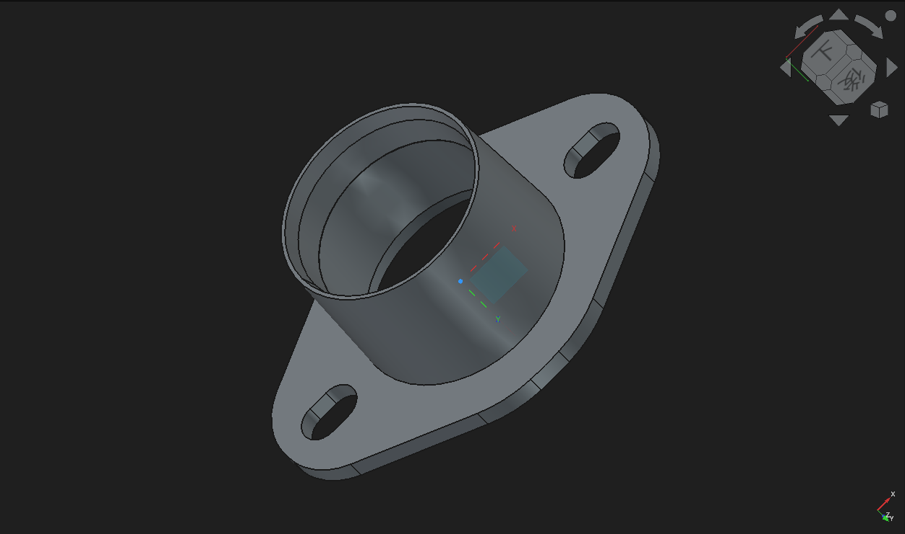
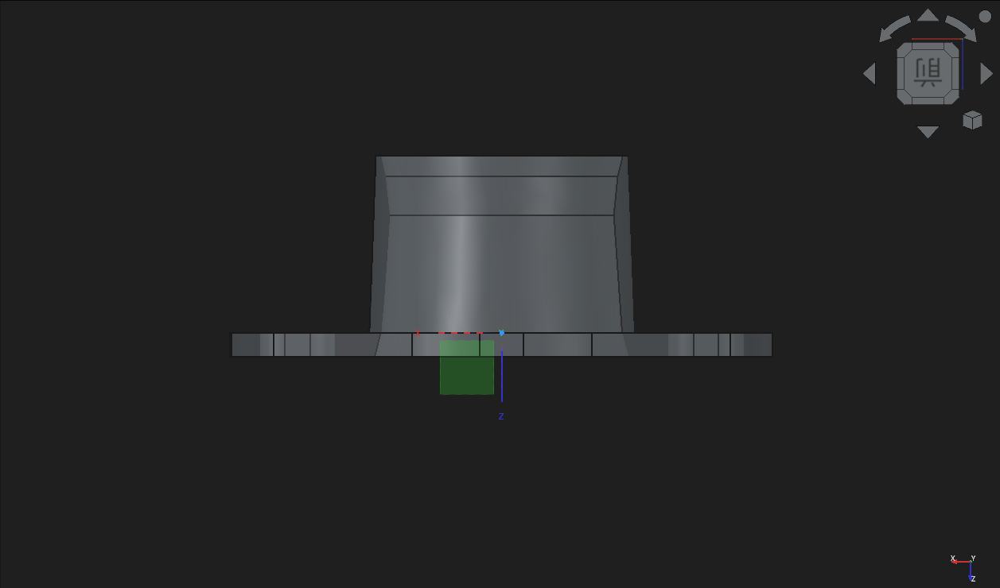
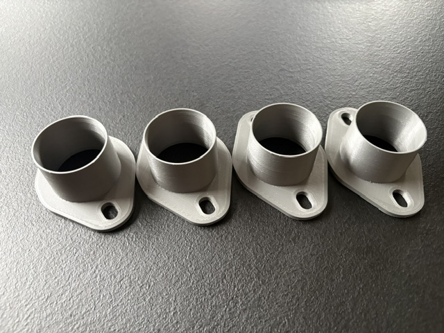
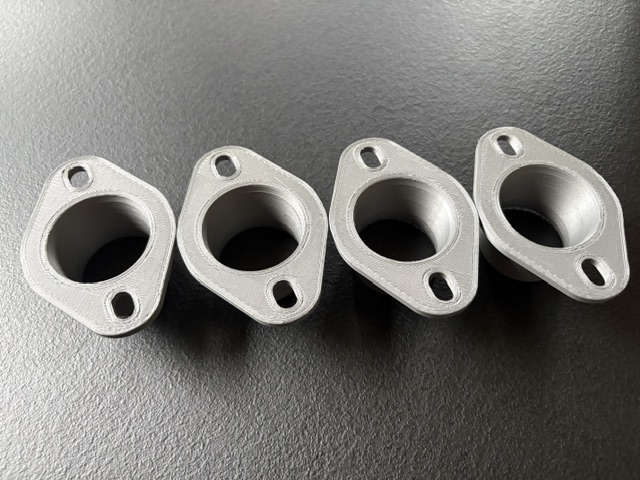
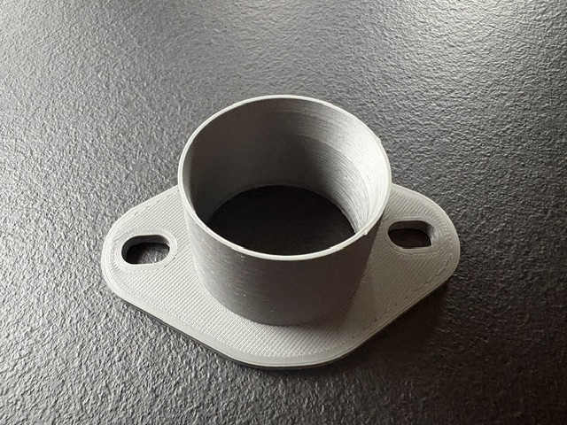
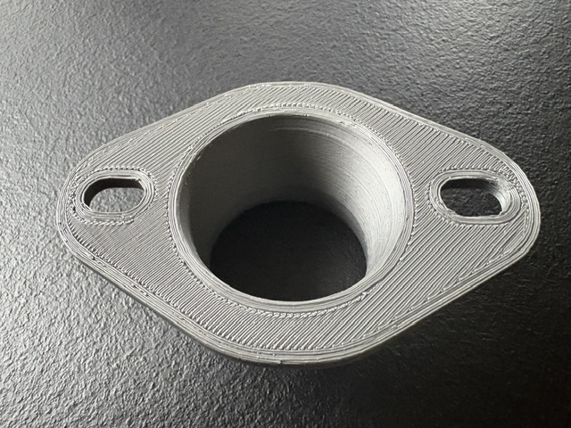

ウェーバー、ソレックス、AE101純正スロットル、45mmスロットルボディに対応したベンチュリー形状、内径約38mmのインレットアダプターです。
業務用3Dプリンターによる製造で、材質はABS樹脂(シルバー)となります。重量は1個あたりなんと16グラム程度と超軽量です。
アルミ材による削り出しでの製造も検討しましたが、材質のコスト高と重量増を考慮した際に、製造元と何度も話し合いを重ね、
ABS樹脂が耐熱基準をクリアし、なおかつ軽量だったことから材質の選定をしました。
本製品は、吸気入口部に独自設計のスワール誘導形状を採用。入口通過時に発生する微細な縦渦（ストリームワイズボルテックス）を利用し、
吸気流の境界層を制御することで、吸入空気の流速の安定化を図っています。
発生した縦渦は、吸気流の壁面剥離を抑制し、高流速域においても安定した流れを維持する役割を持ちます。
単純に口径を絞るのではなく、流体の挙動そのものをコントロールすることで、吸入抵抗の低減と実効流量の向上を狙った設計です。
その後の流路は、急激な断面変化を避けた連続的なベンチュリー形状とし、入口からスロットルボア部まで滑らかに収束させることで、圧力損失を最小限に抑えながら高い流速を維持します。
これにより、アクセル開度の変化に対する吸気応答性を高め、特に低・中速域で優れたトルク＆レスポンス、高回転域では安定した吸入流量の確保を実現します。
さらに、吸気流の乱れを抑制することで、各気筒への吸入効率を高め、シリンダー充填効率の向上を目的とした設計としました。
設計には3D CADを使用し、ファンネルベルマウス部からスロットルボアへ至るまでの形状を最適化。
単なるトルク向上目的の口径縮小アダプタースペーサーではなく、吸気流を積極的に制御するレーシングパーツとして開発しています。
レーシングキャブレターからスポーツインジェクションまで、吸気効率とレスポンスを追求するユーザーのためのインターベンチュリーキットです。
製造上の都合により、ABS樹脂のバリ、積層跡が残る場合があります。気になる場合は#400程度の耐水ペーパーなどで表面を均してください。
この製品に関しては、一気筒あたりおおよそ40馬力程度のエンジンへの装着を目的に設計しています。
例えば、A12改13サニトラ120馬力、AE86、4AGハイカムハイコンプ仕様140馬力、L28/72度カム250馬力などの車両や、
エンジン排気量に対して大きいスロットルボディを装着している場合などは特に効果を発揮しやすいです。
もちろん街乗りでの低・中速域のトルク、レスポンス向上目的で上記以上のパワーが出ている車両にも使用できますが、ピークパワーの向上が見られるかは車両の仕様次第かと思います。
テスト車(AE86 272/264 ハイコンプ仕様)に装着したところ、(A/F値は取り付け前とおおよそ同じ)リセッティング後のインジェクターデューティー値が2500rpm～4800rpmまで最大1.8%UP、
4800rpm～7500rpmで最大2.4%UPと確実に効果を発揮しています。
※上記の金額は1個あたりの金額です。4気筒車は4個、6気筒車は6個で電子メールにてお問合せください。